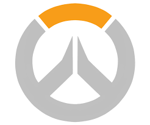

overwatch
Our Overwatch esports programs are growing!
Overwatch Contenders will see its Season 1 Playoffs broadcasted live from the Blizzard Arena in October. The Overwatch World Cup will be taking center stage at BlizzCon in November. And the Overwatch League continues to ramp up to its official launch later this year.
We’re just getting started, though. All that’s missing...is YOU.
We're looking for charismatic broadcasters to join our already stellar talent pool to interview players, commentate matches, and analyze plays. The ideal addition to our team has exemplary social skills, a natural affinity for the camera, keen understanding of the game, and experience conducting upbeat and engaging interviews.
Do you have a passion for being on camera? Are you ready to help us bring the electricity of Overwatch esports to millions of viewers around the globe? If you answered "Cheers, love!" to that question, please send the following to overwatchtalent@blizzard.com by December 15:
Professional resume and headshot
Video showing off your skills as an interviewer, sideline reporter, commentator, or analyst
(OPTIONAL) Talent reel
Starting September 25, the Overwatch team will review submissions and reach out to promising candidates with further instructions. Please note that only English submissions will be considered at this time.
If you submit an entry and don't hear back, stay frosty! We’ll have more opportunities in the future to get involved with Overwatch esports broadcasts.
Terug